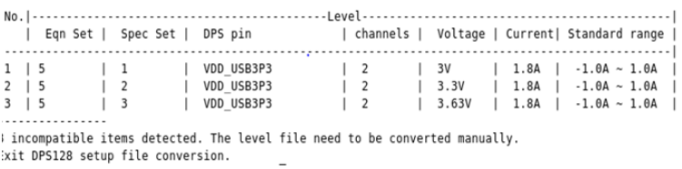

Typical issues when converting to DPS128
The migration tool can help to detect and fix compatibility issue related to Level Specification, Period or memory.
Examples
Example 1: Level Specification
The following example shows how to scan the level setup and detect specification incompatibilities:
/$HP83000_ROOT/prod_pws/migration/DPS128_levelspec_conversion.rb –m <model file> -p <pin config file> <level file>
- [-r] Optional, replace the original file without backup
- [-h] Optional, help
- [-c] Optional, only check if conversion is needed
- [-l <log level>] Optional, log level 3->DEBUG, 2->INFO, 1->WARN, 0->ERROR, default level is INFO
- [-f <logfile>]Optional, conversion result will be logged in <logfile>
- <-m model file> specify the model file that needs to be referred.
- <-p pin config file> specify the pin configure file that needs to be referred.
- <level file>specify the level file that needs to be converted.
INFO:]-----Model file:/home/data/devices/model_MCE INFO:]-----Pin configure:/home/data/devices/configuration/DUT_v2_x4_PS1600_DPS32 INFO:]-----Level file :/home/data/devices/levels/DUT_V3_X4_PS1600_REV006.02.lev

Once detected, you will have to manually change the level file.
Example 2: Period of DPS Cards
The minimum period for DPS32 is 2.5 ns, the minimum period for DPS128 is 20 ns. Pattern on DPS pins within min period less than 20 ns should be adjusted to period 20 ns with DPS128 card. Use the following command to detect period incompatibilities:
/$HP83000_ROOT/prod_pws/migration/DPS128_conversion/DPS128_period_conversion.rb
- [-r] Optional, replace the original file without backup
- [-h] Optional, help
- [-c] Optional, only check if conversion is needed
- <log level>] Optional, log level 3->DEBUG, 2->INFO, 1->WARN, 0->ERROR, default level is INFO
- [-f <logfile>] Optional, conversion result will be logged in <logfile>
- <-m model file> specify the model file that needs to be referred.
- <testflow> specify the testflow(device_path/testflow/tf_name) which need to be updated.
Example 3: Memory of DPS Cards
The total channel memory of DPS32 cards is 56M, the total channel memory of DPS128 cards is 28M. Use the following command to detect memory incompatibilities:
/$HP83000_ROOT/prod_pws/migration/DPS128_conversion/DPS128_memory_conversion.rb
- [-r] Optional, replace the original file without backup
- [-h] Optional, help
- [-d] Optional, delete the test points in pattern file
- [-l <log level>] Optional, log level 3->DEBUG, 2->INFO, 1->WARN, 0->ERROR, default level is INFO
- [-f <logfile>] Optional, conversion result will be logged in <logfile>
- <-m model file> specify the model file that needs to be referred.
- <testflow> specify the testflow(device_path/testflow/tf_name) which need to be updated.
Functional changes
- Introduced in SmarTest 7.2.1